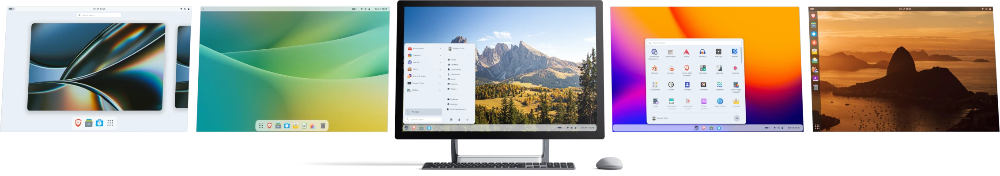

Saved: A venture proposal #
Exectutive overview #
Version 1.2.1
18 December 2025
Ian Allan
Venture designer
Ethical technologist
East Coast, New Zealand
Revision history #
| Version | Date | Change |
|---|---|---|
| 1.0 | 10/12/2025 | First release to local ecosystem |
| 1.1 | 11/12/2025 | Clarification of phased approach |
| 1.1.1 | 16/12/2025 | Ecosystem adjustments |
| 1.2 | 17/12/2025 | Rebuilt prop using 11ty.dev |
| 1.2.1 | 18/12/2025 | Channel partner edits |
Saved: a venture proposal © 2025 by Ian Allan is licensed under CC BY-SA 4.0.
Vision #
A new venture that believes: IT can be saved, and WE can be saved.
Phase 1: Save local Windows 10 laptops #
Saved is a Tairāwhiti-focused commercial alternative to “Recycle A Device” schemes.
The primary focus is rescuing Windows 10 laptops and upgrading them at scale into reimagined Saved laptops through process automation, open systems, product development, and warranties.
Phase 2: Enterprise & nationwide expansion #
The Intellectual Property (IP) developed in Phase 1 is used to make Saved a:
- Provider of enterprise services for new and Saved products to organisations seeking new ways of working
- Nationwide franchise opportunity.
Phase 3: Deep consumer connection #
Saved is:
- A resilient diversified brand in the market for young (15-30, and the young-at-heart) indie creators, artists, developers, environmentalists—the new cyberpunks
- A provider of certifications and qualifications in sovereign and resilient technologies
- For people and organisations conscious of their footprint, the cost of living, bigtech lock-in, and addictive design philosophies.
NOTE: The order of Phase 2 and Phase 3 could depend on the momentum and nature of the IP developed in Phase 1.
Problem #
Immediate problem #
Microsoft ended support for Windows 10 in October 2025. Normally this is not a major issue; but this time, because of the hardware requirements Microsoft set for Windows 11, perfectly good Windows 10 computers cannot be upgraded.
Over a thousand computers in local organisations are destined to head out of the region to e-waste facilities in 2026. Meanwhile personal computers are becoming security risks.
Globally there are estimated to be 400m computers facing this premature death.
These computers can be saved.
Wider challenges #
Sentiments are converging around:
- The dominance and entrapment of bigtech
- Loss of identity and data sovereignty
- AI disrupting professional labour markets
- Digital inequities exacerbating wider inequalities
- Precarious education and employment prospects for young and old.
A referenced analysis of the wider challenges is available on request.
Opportunity #
Urgently #
Hundreds of Windows 10 laptops are already piling up in local IT offices and back rooms. Thousands more are still in use, becoming less secure by the day. IT managers aren’t sure what to do, thinking surely there is another life for these devices.
These laptops urgently need to be saved before IT managers lose hope and send them away to e-waste facilities.
More broadly #
The population of people seeking a better way of being is mainstreaming. The emerging zeitgeist is in search of environmentally and socially sustainable and resilient ways of living alongside technology.
Meanwhile, there is a growing population of people on limited incomes needing access to useful, enjoyable technology experiences.
A referenced analysis of the broader opportunity is available on request.
Solution: Phase 1 #
Saved will collect, process, upgrade, reimagine, and redistribute laptops, with warranties.
Collect and process #
Computers are securely collected from organisations and taken to a storage and processing centre:
- A sale and purchase agreement is used to contractually change ownership
- Laptops are prioritised, however desktop computers and peripherals will also be collected (consideration will be given to desktop computer use cases, for example, as home media centre PCs)
- Computers are securely formatted to untraceably remove all sensitive information (this documented and transparent process can be completed on-premise for added trust)
- Laptops will be physically cleaned, sanitised, and checked for structural weaknesses
- A knowledge base is used to classify laptops into states of readiness for upgrade and subsequent barcoding
- Unsaveable computers and peripherals will be sorted and held for 3-6 months and made available to the public
- Later, the service will extend to personal computers.
Upgrade and reimagine #
A viable alternative operating system #
There is now a viable alternative operating system that gives these saved Windows 10 laptops a secure, stable, fast, enjoyable second life for many more years.
The upgrade is Zorin OS, a distribution of Linux.

 Source: Zorin
Source: Zorin
Open source Linux alternatives have been tried in the past, however they have not stood up to the user expectations and familiarity of Windows.
This time it’s different:
- Zorin has a slicker, richer user interface than Windows
- Zorin can be switched to feel like Windows 10, Windows 11, Mac OS, or a sharper blend of them all
- Zorin runs smoother than Windows on equivalent hardware—it makes a 7 year old laptop feel new again
- Most of our daily computing tasks now happen in our web browsers—from communication to office productivity to design—so the claim that “Linux doesn’t have the software I need” no longer holds for most people.
Note: The intention is not to mimic Windows 10 or even Windows 11 as accurately as possible. Doing so would still feel like playing basketball with a netball—just not quite right.
Upgrade at scale #
A networked, operationalised process will be implemented to upgrade ready laptops at scale.
Better than before #
Several default configurations will be established for the laptops to offer different flavours for different tastes. These will include defaults for: user interface, themes, apps, security, use cases, and getting started tutorials.
The laptops will be physically skinned to represent their renewed state.
Overall, a Saved laptop will be better than before. From the bubbly and bright browser, to the techy and dark developer.
It will be cool to have a Saved laptop.
Redistribute #
Channels and partners #
The Saved laptops will be redistributed to the population through channels and partners such as: Work & Income, Private Training Establishments (PTEs), and other education and social services.
For a price #
The laptops are purchased for a fair price with a warranty, depending on the age and state of the Saved laptop.
Support #
Warranty support #
A reasonable warranty is issued with each Saved laptop and supported at a drop-in centre.
An extended warranty could be made available if demand exists.
Workshops #
Workshops will be run to:
- Help people get the most out of their Saved laptops
- Experience a more socially sustainable, resilient, and affordable way of living with technology.
Solution: Phase 2 and Phase 3 #
The specific detail, timing, and order of Phase 2 and Phase 3 is dependent on the momentum and the nature of the IP developed in Phase 1.
Phase 2: Expansion #
It is expected that Phase 1 will generate valuable know-how and IP that can be realised commercially through enterprise services and nationwide franchising.
Enterprise services #
Saved enters into support and maintenance agreements with organisations that are seeking new ways of working.
Through the integration and support of new and Saved products, Saved helps organisations:
- Confidently deploy and manage ethical software alternatives
- Increase the repairability, modularity, and useful life of their laptop fleet
- Reclaim a sense of sovereignty
- Reduce their excruciating monthly software subscriptions.
Franchise opportunity #
Phase 1 will generate the documentation and technological automation processes to enable the “lift and shift” of operations to other regions.
The know-how and IP would be licensed to franchisees nationwide.
Phase 3: Consumer connection #
It is anticipated that Phase 1 will generate significant brand visibility and ongoing connections, particularly with young adults as the likely widespread recipients of Saved laptops.
A deep connection to the brand’s values creates the opportunity for a hybrid retail presence and the provision of certifications and qualifications.
Hybrid retail presence #
The brand is positioned to diversify into a mix of first-party, related-party, and third-party sourced retail products for:
- Young (15-30, and the young-at-heart) indie creators, artists, developers, environmentalists—the new cyberpunks
- People conscious of their footprint, the cost of living, bigtech lock-in, and addictive design philosophies.
The founder has previously designed related products that are considered to be a natural fit under a Saved retail umbrella.
The retail presence is imagined to have a strikingly visual “open kitchen” approach to its Saved laptop process automation, and also serve as a drop-in centre, workshop, and learning space.
Certifications and qualifications #
Saved develops and provides certifications and qualifications in sovereign and resilient technologies; these would be:
- Accredited through partnering open source foundations and vocational tertiary providers
- Delivered with a hybrid model, a mix of online and face-to-face learning
- Hubbed from the retail presence with a dedicated learning space.
Operating model #
Phase 1 #
- Collect computers from organisations through a sale and purchase agreement
- Process and upgrade computers for redistribution
- Prioritise laptops
- Unsaveable computers and peripherals are sorted and presented to the public for 3-6 months in an appropriate space in
- Sell Saved laptops back into the population, initially through channels, for a fair price in the $100 range with a warranty.
Phase 2 #
Using IP developed in Phase 1 to:
- Enter into support and maintenance agreements with organisations seeking new ways of working through integration of new and Saved products
- License franchise opportunities nationwide.
Phase 3 #
Build on brand connection to:
- Establish a hybrid retail presence
- Deliver certifications and qualifications in sovereign and resilient technologies.
NOTE: Phase 2 and Phase 3 could swap depending on the response to Phase 1 and the position of the venture.
Private company or social enterprise #
It is yet to be determined whether this venture should be positioned as a simple private company or a social enterprise. The current preference is for it to be a mission-driven private company to:
- Incentivise long term viability (Windows 10 laptops won’t always need saving)
- Expedite process optimisation
- Drive product and service innovation
- Create commercial IP
- Be in a position to provide warranties, support, and enterprise services
- Attract private capital.
Progress and roadmap #
Phase 1 #
| When | What |
|---|---|
| Oct 2025 | Microsoft ended support for Windows 10 |
| Oct 2025 | Zorin OS 18 released |
| Oct 2025 | Testing and validating Zorin OS on three different Windows 10 laptops (average 7 years old) |
| Oct-Dec 2025 | Using Zorin as daily driver on 9 year old laptop: communication, office productivity, design, development |
| Nov 2025 | Improving efficiency of Zorin installation process for multi-laptop installations (EIT intern) |
| Nov 2025 | Zorin installed on 40 laptops (EIT intern) |
| Nov 2025 | Zorin discovery workshop with local Year 10 students (computing enthusiasts) |
| Dec 2025 | Zorin discovery workshop with local Year 10 students (non-computing enthusiasts) |
| Dec-Jan 2026 | Default configuration builds for different personalities and use cases |
| Feb 2026 | Documentation and contractual agreements |
| Feb 2026 | First enterprise collection, processing, and upgrade of saved computers |
| Mar-Apr 2026 | First channel partner established |
| Mar-Apr 2026 | Storage and processing centre established |
| Q2-Q4 2026 | Operationalised end-to-end process from collection to redistributive sale |
| Q2-Q4 2026 | Adapting builds based on feedback |
| Q3 2026 | Trial and introduce Pop!_OS if compatible and ready for production |
| Q3 2026 | Introduce Omarchy for the developer enthusiast |
| Q3-Q4 2026 | Drop-ins and workshops |
| 2027 | Extend service to personal computers |
Phase 2 #
| When | What |
|---|---|
| Q1 2027 | First enterprise support and maintenance agreement signed |
| Q2 2027 | Test franchise opportunity |
Phase 3 #
| When | What |
|---|---|
| 2028 | Retail presence representing wider brand values and products |
| 2028 | Begin provision of certifications |
Go-to-market #
Name and brand #
The name and go-to-market brand for the venture is Saved.
Indicative vessel logo:
The brand represents:
- The urgent need to save these Windows 10 laptops with a nod to a daily IT action (“have you saved it?”)
- The longer-term need to save us from bigtech lock-in, the high cost of technology, addictive design, and post-automation precarity.
Market focus #
The venture is local-first, only looking to save these Windows 10 laptops before they leave our region.
Once operationally established, the wider opportunity will be considered; albeit conscious of the urgency of the problem nationwide, and globally.
Visibility #
Initially the venture is focused on channels and partners and not direct-to-consumer transactions. Even so, the venture will be present in the community and not just positioned as a back-office service.
Brand voice #
Over time, as the venture moves closer to the customer, brand messaging and treatments will position the brand, products, and services to speak to:
- Young (15-30, and the young-at-heart) indie creators, artists, developers, environmentalists—the new cyberpunks
- Those with an urge to live better: conscious of their footprint, the cost of living, bigtech lock-in, and addictive design philosophies.
Example logo treatments #
The logo is designed to be used as a vessel for speaking to different audiences.
Treatments of the Saved logo as a vessel for different voices.
Brand examples in context #
Even though a store-front and learning space is anticipated later in the roadmap, the intention is to be present in the community.
Source: TERN Bicycles
Initial prompt: A local retail store front in a sort of bohemian area, ideally it looks like a shop in New Zealand; the store sells revived laptops and other products that appeal to indie kids.

Initial prompt: an image in-store, I want it to have a plywood feel for the display of the laptops etc, a bit like a local izakaya/bar in Japan - a bit of a lived-in feel, definitely not too rustic, and still a cool vibe.
Initial prompt: Imagine there is an additional larger room out the back where workshops and qualifications are run with young adults - similar plywood style long desks with the laptops on them - some nice big windows.
Source: Gisborne Thistle AFC
Source: Gisborne District Council
Ecosystem #
The regional ecosystem covering environmental management, technology, education, social services, and regional development is diverse in scope, focus, and approach; a sample of that ecosystem follows.
E-waste management #
| Entity | Potential Relationship |
|---|---|
| Tairāwhiti Environment Centre (TEC) |
|
| TechCollect NZ (with Noel Leeming) |
|
| Recycle A Device (with Tōnui Collab) |
|
IT retailers and IT services #
| Entity | Potential Relationship |
|---|---|
| Noel Leeming, Harvey Norman et al |
|
| Business Applications, Fusion Networks, Mytronics et al |
|
IT capability building and education #
| Entity | Potential Relationship |
|---|---|
| Tōnui Collab |
|
| Rāngai |
|
| TaiTech |
|
| Digital Futures Aotearoa, Remojo Tech |
|
| EIT |
|
| Te Wānanga o Aotearoa, Tūranga Ararau, and PTEs |
|
| Local high schools |
|
Social services #
| Entity | Potential Relationship |
|---|---|
| WINZ |
|
| Moni Ora et al |
|
Regional development #
| Entity | Potential Relationship |
|---|---|
| Gisborne District Council (GDC) |
|
| Trust Tairāwhiti, Rongowhakaata Iwi Trust |
|
People #
Ian Allan: Founder #
Venture designer and ethical technologist based in Gisborne, New Zealand, at ianallannz.github.io.
It could be said that everything has led to Saved.
| When | What |
|---|---|
| 1992 | First 386 computer at home; immediately set about creating MS-DOS menu interfaces and Windows 3.1 user interface designs |
| 1994 | Dux and quiet indie kid |
| 1995-2000 | Computing & Mathematical Sciences degree, majoring in graphics, multimedia, and human-computer interaction (HCI) |
| 1998-2003 | Active in the design-forward operating system customisation online community |
| 2000-2021 | Print, web, app, and technology designer and developer |
| 2006-2017 | On-again-off-again member of political parties pursuing sustainable development and a fairer society |
| 2007-2020 | Professional product, marketing, and strategic executive |
| 2013-2025 | Hobbyist saver, customiser, and user of old laptops |
| 2018-2025 | Mobile experimentalist, breaking addiction |
| 2021-2025 | Local tertiary educator in business and computing; amateur joiner and decorator |
| 2025 | Re-energised indie digital designer and developer |
| 2025 | Failed district council candidate advocating for "a new abundance built on place not things"—"a self-sufficient and resilient place" |
Sabian Coomber: EIT Bachelor of Computing graduate #
Sabian recently completed a final-year internship at EIT where he became familiar with commercial-grade server builds, Zorin installations on 5-10 year old laptops, inventory management, and the early stages of installation scripting and technical process automation.
Sabian would become an integral part of the Saved team.
Tahi O’Neill: Gisborne Boys High School graduate #
Tahi recently completed secondary school and is heading to AUT in 2026. With a love of open technology and hardware design from days-gone-by, Tahi spends time at TEC rescuing technology.
Over summer, Tahi would like to support the early development and testing of Saved laptops.
Advisory Board #
To be determined, preferably from the local ecosystem.
Risks #
There are always reasons not to do something. And there are several risks that could end this venture.
| Risk | Likelihood | Impact | Mitigation/Action |
|---|---|---|---|
| Low demand for non-Windows laptops | Medium-High | Critical | Demonstrate the Saved experience as better than before; either wind down as a private venture if cannot overcome risk or prioritise franchise opportunity in larger and/or more receptive regions. |
| Low demand for Saved laptops priced in the $100 range | Medium-High | Critical | Demonstrate the $100 in value; either wind down as a private venture if cannot overcome risk or prioritise franchise opportunity in larger and/or more receptive regions. |
| Low demand for enterprise support and maintenance agreements | Medium-High | Medium-High | Continue to advocate for other ways of working; shelve enterprise support and maintenance as a revenue line. |
| Cannot maintain enough free cashflow to fund required operations | High | Critical | Seek philanthropic angel investor to support early growth stages, or wind down as a private venture if cannot overcome risk. |
| Founder fails to establish a cornerstone partner (such as WINZ) promptly enough | Medium | Medium | Maintain high engagement with potential partners; bring forward retail presence. |
| Saved is regarded as a self-centred for-profit competitor in the ecosystem | High | Medium | Be publicly transparent about the make-up of the cost+ pricing to show it is a fair and reasonable model, and the most viable way to save the scale of laptops. |
| Founder fails to develop working relationships in the ecosystem | Medium | Medium | Be better at getting-to-know the people in the ecosystem; be useful. |
| New Zealand’s largest e-waste recycling company Echo or the Recycle A Device initiative scales up to suitably address the Windows 10 problem nationwide | Medium | High | Demonstrate the differentiated value of Saved; wind down as a private venture if cannot overcome incumbent momentum. |
| Cannot acquire a suitable storage and processing centre promptly enough | Medium-Low | Medium-Low | Seek on-site processing; use the founder's home. |
| High accumulation of unusable computers and peripherals | Medium | Medium-Low | Send to e-waste facilities after 3-6 months if/when no interest shown by the public; send to e-waste sooner if suitable storage and processing centre not acquired. |
| Cannot make laptop upgrade process efficient enough at scale | Medium-Low | Medium-High | Rely on ongoing technical expertise to achieve operational efficiencies. |
| Lack of technical expertise to save laptops | Low | High | Acquire additional expertise if cashflow available; use AI support when founder expertise hits limits. |
| Founder does not have enough available capacity to successfully drive the venture | Medium | High | Seek philanthropic angel investor to free-up more time; look at ways to slow the rate of progress while still saving the laptops; hand over operations to an entity with capacity. |
| Low demand for diversified retail products | Medium-Low | Medium | Continue product development to better meet demand; use other channels (online, more receptive regions); abandon product(s). |
| Low demand for certifications and qualifications focused on sovereign and resilient technologies | Medium-Low | Medium-Low | Market their usefulness vs alternatives. |
Next steps #
- Introduce the proposed venture to the ecosystem and regional stakeholders to challenge its commercial viability
- Configure different Saved laptop flavours for different tastes and use cases, and host demonstrations to further challenge the viability of the proposed venture
- If supported and considered viable by the ecosystem and regional stakeholders:
- Incorporate the venture
- Seek a temporary storage and processing facility, ideally in conjunction with TEC and GDC
- Establish an advisory group
- Apply for a feasibility grant with Trust Tairāwhiti to assess technical operationalisation at-scale, and go-to-market potential
- Potentially seek philanthropic angel investor